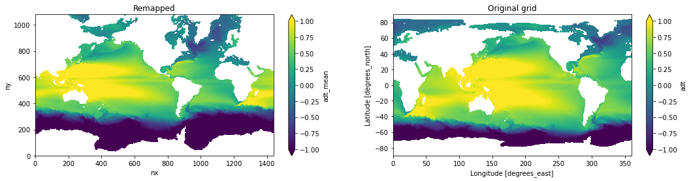

Regrid SSH from Aviso#
This notebook documents the steps needed to regrid Aviso datasets into a nominal 1/4 deg MOM grid (tx1_4).
%matplotlib inline
import xarray as xr
import xesmf
import numpy as np
from datetime import datetime
import matplotlib.pyplot as plt
fname = '../mesh/tx1_4_grid.nc'
ds_out = xr.open_dataset(fname).rename({'tlon': 'lon','tlat': 'lat', 'qlon': 'lon_b','qlat': 'lat_b',})
ds_out
<xarray.Dataset>
Dimensions: (ny: 1080, nx: 1440, nxp: 1441, nyp: 1081)
Dimensions without coordinates: ny, nx, nxp, nyp
Data variables: (12/20)
lon (ny, nx) float64 ...
lat (ny, nx) float64 ...
ulon (ny, nxp) float64 ...
ulat (ny, nxp) float64 ...
vlon (nyp, nx) float64 ...
vlat (nyp, nx) float64 ...
... ...
tarea (ny, nx) float64 ...
tmask (ny, nx) float64 ...
angle (ny, nx) float64 ...
depth (ny, nx) float64 ...
ar (ny, nx) float64 ...
egs (ny, nx) float64 ...
Attributes:
Description: CESM MOM6 1/4 degree grid
Author: Frank, Fred, Gustavo (gmarques@ucar.edu)
Created: 2022-12-27T10:20:11.076318
type: Glogal 1/4 degree grid fileMean sea level anomaly#
infile = '/glade/campaign/cgd/oce/datasets/obs/aviso/mean_sea_level_anomaly/dt_global_allsat_msla_h_*'
ds_in = xr.open_mfdataset(infile)
ds_in
<xarray.Dataset>
Dimensions: (time: 312, nv: 2, lat: 720, lon: 1440)
Coordinates:
* time (time) datetime64[ns] 1993-01-15 1993-02-15 ... 2018-12-15
* lat (lat) float32 -89.88 -89.62 -89.38 ... 89.38 89.62 89.88
* lon (lon) float32 0.125 0.375 0.625 ... 359.4 359.6 359.9
* nv (nv) int32 0 1
Data variables:
climatology_bnds (time, nv) datetime64[ns] dask.array<chunksize=(1, 2), meta=np.ndarray>
lat_bnds (time, lat, nv) float32 dask.array<chunksize=(1, 720, 2), meta=np.ndarray>
lon_bnds (time, lon, nv) float32 dask.array<chunksize=(1, 1440, 2), meta=np.ndarray>
crs (time) int32 -2147483647 -2147483647 ... -2147483647
sla (time, lat, lon) float64 dask.array<chunksize=(1, 720, 1440), meta=np.ndarray>
Attributes: (12/39)
cdm_data_type: Grid
comment: Monthly Mean of Sea Level Anomalies refe...
date_issued: 2018-02-13 16:54:24Z
time_coverage_resolution: P1M
creator_email: aviso@altimetry.fr
product_version: 5.10
... ...
geospatial_vertical_min: 0.0
geospatial_vertical_max: 0.0
geospatial_lat_units: degrees_north
geospatial_lon_units: degrees_east
geospatial_lat_resolution: 0.25
geospatial_lon_resolution: 0.25sla_std = ds_in.sla.std('time').load()
/glade/work/gmarques/miniconda/envs/omwg_dev/lib/python3.8/site-packages/dask/array/numpy_compat.py:40: RuntimeWarning: invalid value encountered in true_divide
x = np.divide(x1, x2, out)
sla_std.plot()
<matplotlib.collections.QuadMesh at 0x2afd91159880>
def regrid_tracer(ds_in, ds_out, method='bilinear'):
regrid = xesmf.Regridder(
ds_in,
ds_out,
method=method,
periodic=True,
)
fld_out = regrid(ds_in)
return fld_out
sla_std_regrid = regrid_tracer(sla_std, ds_out).rename('ssh_std')
/glade/work/gmarques/miniconda/envs/omwg_dev/lib/python3.8/site-packages/xarray/core/dataarray.py:780: FutureWarning: elementwise comparison failed; returning scalar instead, but in the future will perform elementwise comparison
return key in self.data
# visual inspection. Make sure original and remapped plots look similar
fig, axes = plt.subplots(nrows=1, ncols=2, figsize=(18,4))
sla_std_regrid.where(ds_out.tmask==1.).plot.pcolormesh(ax=axes[0], vmin=0,vmax=0.5)
sla_std.plot.pcolormesh(ax=axes[1], vmin=0,vmax=0.5)
axes[0].set_title('Remapped')
axes[1].set_title('Original grid')
Text(0.5, 1.0, 'Original grid')
# Global attrs
sla_std_regrid.attrs['title'] = 'Sea surface high standard deviation calculated from monthly means sla from AVISO and remapped to tx1_4.'
sla_std_regrid.attrs['start_time'] = str(ds_in.time[0].values)
sla_std_regrid.attrs['end_time'] = str(ds_in.time[-1].values)
sla_std_regrid.attrs['author'] = 'Gustavo Marques (gmarques@ucar.edu)'
sla_std_regrid.attrs['date'] = datetime.now().isoformat()
sla_std_regrid.attrs['infile'] = infile
sla_std_regrid.attrs['url'] = 'https://github.com/NCAR/tx1_4/ssh/'
# save
fname = 'ssh_std_aviso_to_tx1_4.nc'
sla_std_regrid.to_netcdf(fname)
Mean sea surface height above geoid#
The absolute dynamic topography is the sea surface height above geoid; the adt is obtained as follows: adt=sla+mdt where mdt is the mean dynamic topography; see the product user manual for details
infile = '/glade/campaign/cgd/oce/datasets/obs/aviso/mean_sea_level/dt_global_allsat_phy_l4_*.nc'
ds_in = xr.open_mfdataset(infile)
adt_mean = ds_in.adt.mean('time').load()
adt_mean_regrid = regrid_tracer(adt_mean, ds_out).rename('adt_mean')
/glade/work/gmarques/miniconda/envs/omwg_dev/lib/python3.8/site-packages/xarray/core/dataarray.py:780: FutureWarning: elementwise comparison failed; returning scalar instead, but in the future will perform elementwise comparison
return key in self.data
# visual inspection. Make sure original and remapped plots look similar
fig, axes = plt.subplots(nrows=1, ncols=2, figsize=(18,4))
adt_mean_regrid.where(ds_out.tmask==1.).plot.pcolormesh(ax=axes[0], vmin=-1,vmax=1)
adt_mean.plot.pcolormesh(ax=axes[1], vmin=-1,vmax=1)
axes[0].set_title('Remapped')
axes[1].set_title('Original grid');

# Global attrs
adt_mean_regrid.attrs['title'] = 'Mean sea surface height above geoid from AVISO remapped to tx1_4.'
adt_mean_regrid.attrs['start_time'] = str(ds_in.time[0].values)
adt_mean_regrid.attrs['end_time'] = str(ds_in.time[-1].values)
adt_mean_regrid.attrs['author'] = 'Gustavo Marques (gmarques@ucar.edu)'
adt_mean_regrid.attrs['date'] = datetime.now().isoformat()
adt_mean_regrid.attrs['infile'] = infile
adt_mean_regrid.attrs['url'] = 'https://github.com/NCAR/tx1_4/ssh/'
# save
fname = 'adt_mean_aviso_to_tx1_4.nc'
adt_mean_regrid.to_netcdf(fname)